Referencia Técnica · E2 — CE022
Scripts SQL — Base de Datos QhawAI
DDL completo de las 10 tablas (incluyendo auditoria_asistencia), índices de optimización, 2 vistas, 2 procedimientos almacenados, 1 trigger de auditoría y 1 función de estado. Cada script incluye evidencia de ejecución.
2.1 Scripts DDL — Creación de Tablas
SQL — tabla: users
CREATE TABLE users ( id BIGINT UNSIGNED NOT NULL AUTO_INCREMENT, name VARCHAR(255) NOT NULL, email VARCHAR(255) NOT NULL, email_verified_at TIMESTAMP NULL, password VARCHAR(255) NOT NULL, role ENUM('admin','parent') NOT NULL DEFAULT 'admin', is_super_admin TINYINT(1) NOT NULL DEFAULT 0, phone VARCHAR(30) NULL, fcm_token VARCHAR(255) NULL, remember_token VARCHAR(100) NULL, created_at TIMESTAMP NULL, updated_at TIMESTAMP NULL, PRIMARY KEY (id), UNIQUE KEY users_email_unique (email) ) ENGINE=InnoDB DEFAULT CHARSET=utf8mb4 COLLATE=utf8mb4_unicode_ci;
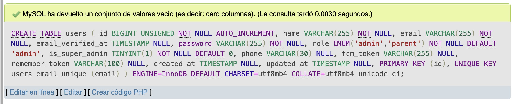
Tabla users creada en phpMyAdmin
SQL — tabla: personas
CREATE TABLE personas ( id BIGINT UNSIGNED NOT NULL AUTO_INCREMENT, dni VARCHAR(50) NOT NULL, nombre VARCHAR(255) NOT NULL, tipo ENUM('estudiante','docente') NOT NULL DEFAULT 'estudiante', grado_id BIGINT UNSIGNED NULL, seccion_id BIGINT UNSIGNED NULL, grado_nombre VARCHAR(100) NOT NULL DEFAULT '', seccion_nombre VARCHAR(50) NOT NULL DEFAULT '', turno ENUM('manana','tarde') NOT NULL DEFAULT 'manana', area VARCHAR(100) NULL, enrollment_complete TINYINT(1) NOT NULL DEFAULT 0, total_faces SMALLINT UNSIGNED NOT NULL DEFAULT 0, total_raw SMALLINT UNSIGNED NOT NULL DEFAULT 0, total_augmented SMALLINT UNSIGNED NOT NULL DEFAULT 0, created_at TIMESTAMP NULL, updated_at TIMESTAMP NULL, PRIMARY KEY (id), UNIQUE KEY personas_dni_unique (dni), CONSTRAINT fk_personas_grado FOREIGN KEY (grado_id) REFERENCES grados (id) ON DELETE SET NULL ON UPDATE CASCADE, CONSTRAINT fk_personas_seccion FOREIGN KEY (seccion_id) REFERENCES secciones (id) ON DELETE SET NULL ON UPDATE CASCADE ) ENGINE=InnoDB DEFAULT CHARSET=utf8mb4 COLLATE=utf8mb4_unicode_ci;
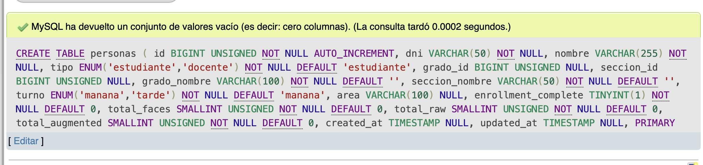
Tabla personas creada en phpMyAdmin
SQL — tabla: asistencia (tabla central)
CREATE TABLE asistencia ( id VARCHAR(36) NOT NULL, -- UUID dni VARCHAR(20) NOT NULL, nombre VARCHAR(255) NOT NULL, -- snapshot tipo ENUM('estudiante','docente') NOT NULL DEFAULT 'estudiante', grado_nombre VARCHAR(255) NULL, seccion_nombre VARCHAR(255) NULL, area VARCHAR(255) NULL, fecha DATE NOT NULL, hora TIME NOT NULL, timestamp DATETIME NOT NULL, turno ENUM('manana','tarde') NOT NULL DEFAULT 'manana', is_late TINYINT(1) NOT NULL DEFAULT 0, minutos_tarde SMALLINT UNSIGNED NOT NULL DEFAULT 0, confidence_pct DECIMAL(5,1) NULL, face_image_path VARCHAR(512) NULL, full_frame_path VARCHAR(255) NULL, recorded_by BIGINT UNSIGNED NULL, ip_address VARCHAR(45) NULL, latitude DECIMAL(10,7) NULL, longitude DECIMAL(10,7) NULL, created_at TIMESTAMP NULL, updated_at TIMESTAMP NULL, PRIMARY KEY (id), UNIQUE KEY asistencia_dni_fecha_unique (dni, fecha), CONSTRAINT fk_asistencia_usuario FOREIGN KEY (recorded_by) REFERENCES users (id) ON DELETE SET NULL ON UPDATE CASCADE ) ENGINE=InnoDB DEFAULT CHARSET=utf8mb4 COLLATE=utf8mb4_unicode_ci;
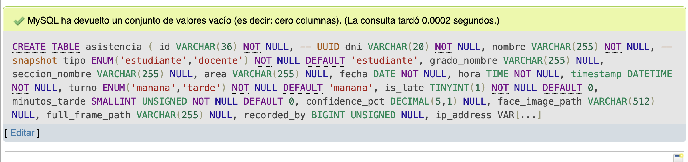
Tabla asistencia creada en phpMyAdmin
SQL — tablas: grados, secciones, configuracion
CREATE TABLE grados ( id BIGINT UNSIGNED NOT NULL AUTO_INCREMENT, nombre VARCHAR(60) NOT NULL, nivel VARCHAR(20) NOT NULL, horario_entrada VARCHAR(8) NOT NULL DEFAULT '07:30', tolerancia_minutos TINYINT NOT NULL DEFAULT 10, activo TINYINT(1) NOT NULL DEFAULT 1, created_at TIMESTAMP NULL, updated_at TIMESTAMP NULL, PRIMARY KEY (id) ) ENGINE=InnoDB; CREATE TABLE secciones ( id BIGINT UNSIGNED NOT NULL AUTO_INCREMENT, grado_id BIGINT UNSIGNED NOT NULL, nombre VARCHAR(10) NOT NULL, horario_entrada_override VARCHAR(8) NULL, activo TINYINT(1) NOT NULL DEFAULT 1, PRIMARY KEY (id), CONSTRAINT fk_secciones_grado FOREIGN KEY (grado_id) REFERENCES grados (id) ON DELETE CASCADE ON UPDATE CASCADE ) ENGINE=InnoDB; CREATE TABLE configuracion ( id BIGINT UNSIGNED NOT NULL AUTO_INCREMENT, -- siempre = 1 nombre_colegio VARCHAR(255) NOT NULL DEFAULT 'Mi Colegio', turno_unico TINYINT(1) NOT NULL DEFAULT 1, manana_entrada TIME NULL DEFAULT '07:30:00', manana_tolerancia TINYINT NOT NULL DEFAULT 10, manana_corte TIME NULL, tarde_entrada TIME NULL, tarde_tolerancia TINYINT NOT NULL DEFAULT 10, tarde_corte TIME NULL, PRIMARY KEY (id) ) ENGINE=InnoDB;
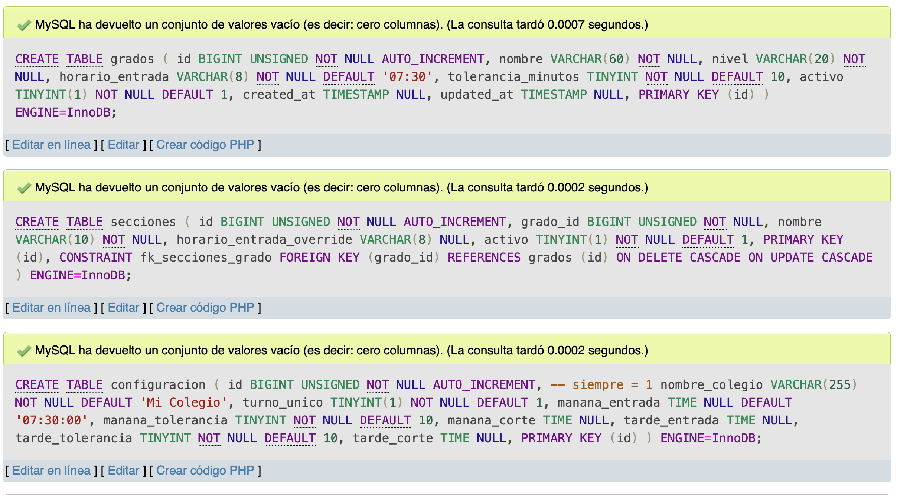
Tablas grados, secciones y configuracion creadas
SQL — tabla: areas
CREATE TABLE areas ( id BIGINT UNSIGNED NOT NULL AUTO_INCREMENT, nombre VARCHAR(100) NOT NULL, activo TINYINT(1) NOT NULL DEFAULT 1, created_at TIMESTAMP NULL, updated_at TIMESTAMP NULL, PRIMARY KEY (id), UNIQUE KEY areas_nombre_unique (nombre) ) ENGINE=InnoDB DEFAULT CHARSET=utf8mb4 COLLATE=utf8mb4_unicode_ci; -- Dato inicial obligatorio INSERT INTO areas (nombre, activo) VALUES ('Administración', 1);
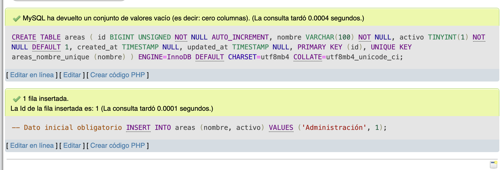
Tabla areas creada en phpMyAdmin
SQL — tabla: parent_student
CREATE TABLE parent_student ( id BIGINT UNSIGNED NOT NULL AUTO_INCREMENT, user_id BIGINT UNSIGNED NOT NULL, student_dni VARCHAR(50) NOT NULL, created_at TIMESTAMP NULL, updated_at TIMESTAMP NULL, PRIMARY KEY (id), UNIQUE KEY parent_student_unique (user_id, student_dni), CONSTRAINT fk_ps_user FOREIGN KEY (user_id) REFERENCES users (id) ON DELETE CASCADE, INDEX parent_student_student_dni_index (student_dni) ) ENGINE=InnoDB DEFAULT CHARSET=utf8mb4 COLLATE=utf8mb4_unicode_ci;
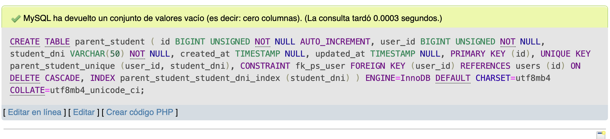
Tabla parent_student creada en phpMyAdmin
3.1 Consultas SQL Relevantes
SQL — Asistencias del día con operador
SELECT a.id, a.dni, a.nombre, a.tipo, a.grado_nombre, a.seccion_nombre, a.hora, a.turno, a.is_late, a.minutos_tarde, a.confidence_pct, u.name AS operador_nombre FROM asistencia a LEFT JOIN users u ON a.recorded_by = u.id WHERE a.fecha = '2026-06-29' ORDER BY a.hora ASC;
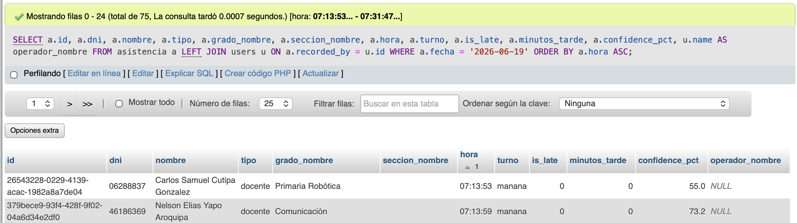
Consulta: asistencias del día con operador
SQL — Faltas del día (personas que NO asistieron)
SELECT p.dni, p.nombre, p.tipo, p.grado_nombre, p.seccion_nombre, p.turno FROM personas p WHERE p.dni NOT IN ( SELECT a.dni FROM asistencia a WHERE a.fecha = '2026-06-29' ) ORDER BY p.grado_nombre, p.nombre;
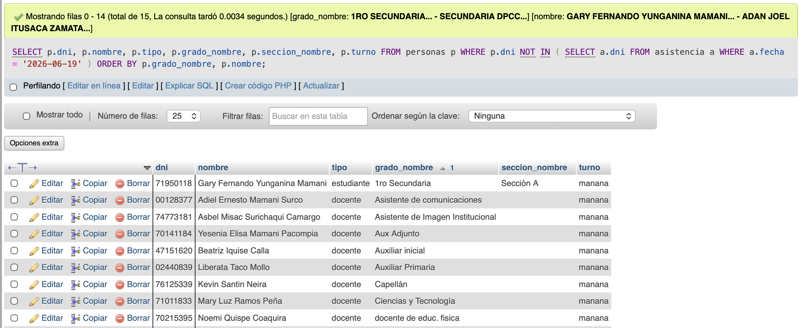
Consulta: personas que no asistieron
SQL — Resumen por rango de fechas
SELECT p.dni, p.nombre, p.tipo, p.grado_nombre, COUNT(a.id) AS dias_asistio, SUM(CASE WHEN a.is_late = 1 THEN 1 ELSE 0 END) AS dias_tarde, SUM(CASE WHEN a.is_late = 0 THEN 1 ELSE 0 END) AS dias_puntual, AVG(a.confidence_pct) AS confianza_prom FROM personas p LEFT JOIN asistencia a ON p.dni = a.dni AND a.fecha BETWEEN '2026-06-01' AND '2026-06-30' GROUP BY p.dni, p.nombre, p.tipo, p.grado_nombre ORDER BY p.grado_nombre, p.nombre;
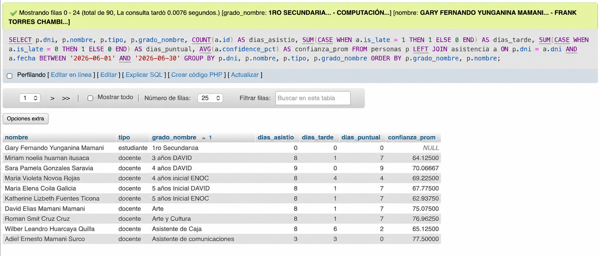
Consulta: resumen por rango de fechas
SQL — Días escolares válidos (≥10% del total)
SELECT a.fecha, COUNT(DISTINCT a.dni) AS total_asistencias FROM asistencia a WHERE a.fecha BETWEEN '2026-06-01' AND '2026-06-30' GROUP BY a.fecha HAVING COUNT(DISTINCT a.dni) >= ( SELECT GREATEST(1, ROUND(COUNT(*) * 0.10)) FROM personas ) ORDER BY a.fecha;
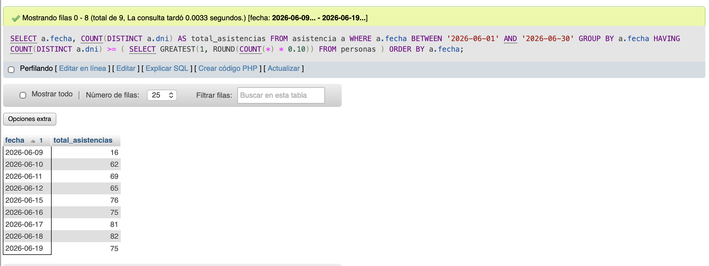
Consulta: días escolares válidos
3.2 Vistas
SQL — Vista: v_asistencia_hoy
CREATE OR REPLACE VIEW v_asistencia_hoy AS SELECT a.id, a.dni, a.nombre, a.tipo, a.grado_nombre, a.seccion_nombre, a.hora, a.is_late, a.minutos_tarde, a.confidence_pct, a.face_image_path, u.name AS registrado_por FROM asistencia a LEFT JOIN users u ON a.recorded_by = u.id WHERE a.fecha = CURDATE();
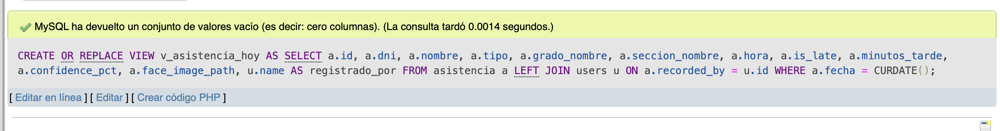
Vista v_asistencia_hoy creada
SQL — Vista: v_tardanzas_por_grado
CREATE OR REPLACE VIEW v_tardanzas_por_grado AS SELECT grado_nombre, COUNT(*) AS total_tardanzas, AVG(minutos_tarde) AS promedio_minutos, MAX(minutos_tarde) AS mayor_tardanza, DATE_FORMAT(fecha, '%Y-%m') AS mes FROM asistencia WHERE is_late = 1 GROUP BY grado_nombre, DATE_FORMAT(fecha, '%Y-%m') ORDER BY mes DESC, total_tardanzas DESC;
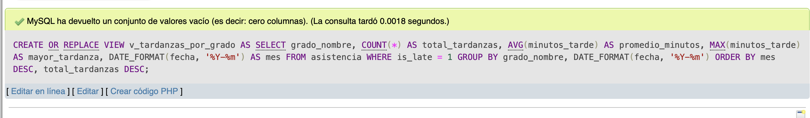
Vista v_tardanzas_por_grado creada